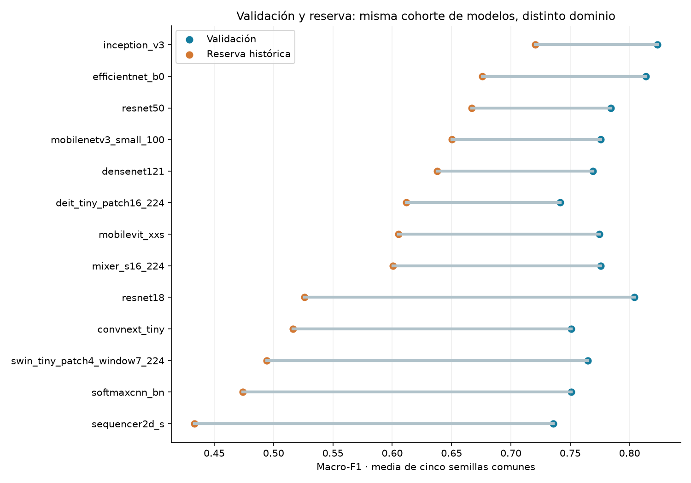
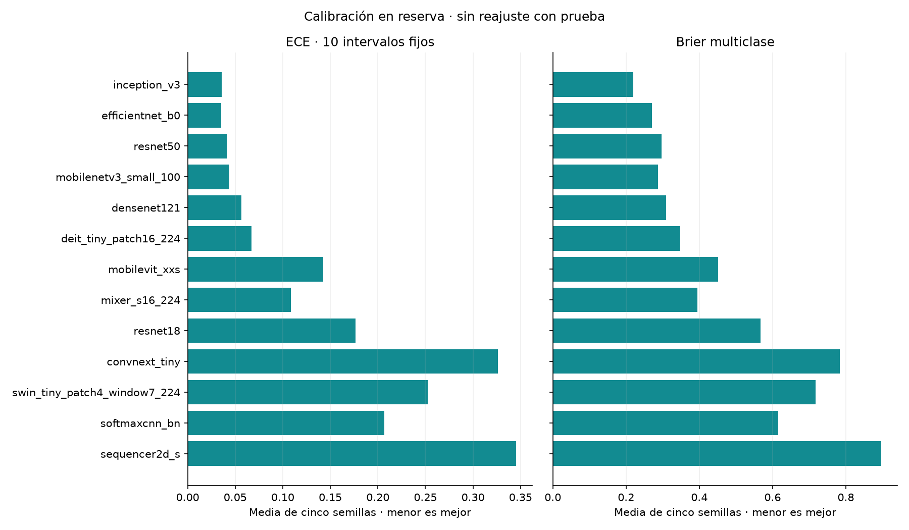
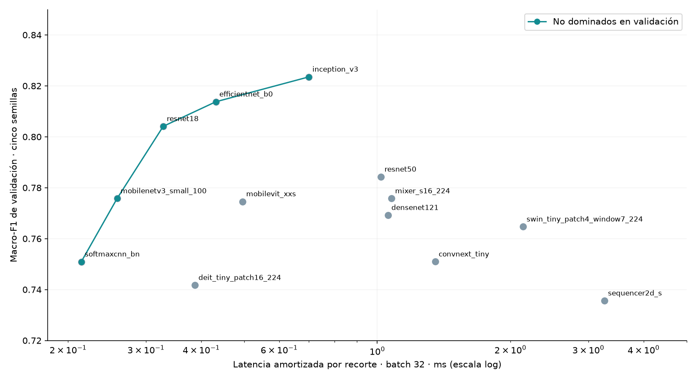

Calibración, generalización y costo#
Actualización online · 16 de noviembre de 2026. Análisis descriptivo de las 65 evaluaciones guardadas del cierre. No incorpora resultados de PCam ni nuevos entrenamientos.
Caída de validación a reserva#

Las medias usan las mismas cinco semillas (6101–6105). InceptionV3 pasa de 0,8235 a 0,7204 (caída de 0,1031), ResNet50 de 0,7843 a 0,6669 (0,1173) y ResNet18 de 0,8041 a 0,5260 (0,2781). El orden de los modelos cambia entre particiones. Esto es compatible con diferencias de dominio, composición y soporte; no demuestra por sí solo su causa.
La validación tiene 2.049 recortes de 21 pacientes y la reserva 969 recortes de seis pacientes. Se mantiene separado el análisis de desarrollo con 22 semillas de las bases. La columna train limpio utiliza inferencia sin augmentación: no equivale a la pérdida observada durante entrenamiento.
Calibración y discriminación#

Modelo |
AUC macro |
MCC |
Brier |
ECE fijo |
ECE adaptativo |
|---|---|---|---|---|---|
inception_v3 |
0.9263 |
0.6444 |
0.2195 |
0.0356 |
0.0360 |
efficientnet_b0 |
0.8919 |
0.5833 |
0.2713 |
0.0350 |
0.0399 |
resnet50 |
0.9025 |
0.5589 |
0.2975 |
0.0416 |
0.0424 |
mobilenetv3_small_100 |
0.8672 |
0.5413 |
0.2871 |
0.0440 |
0.0455 |
densenet121 |
0.8876 |
0.5461 |
0.3097 |
0.0567 |
0.0577 |
deit_tiny_patch16_224 |
0.8632 |
0.4826 |
0.3480 |
0.0669 |
0.0649 |
mobilevit_xxs |
0.8638 |
0.5057 |
0.4510 |
0.1423 |
0.1435 |
mixer_s16_224 |
0.8844 |
0.4891 |
0.3946 |
0.1085 |
0.1103 |
resnet18 |
0.8667 |
0.4192 |
0.5666 |
0.1763 |
0.1778 |
convnext_tiny |
0.8676 |
0.4043 |
0.7840 |
0.3261 |
0.3280 |
swin_tiny_patch4_window7_224 |
0.8599 |
0.3872 |
0.7172 |
0.2523 |
0.2516 |
softmaxcnn_bn |
0.8705 |
0.3602 |
0.6151 |
0.2067 |
0.2071 |
sequencer2d_s |
0.8102 |
0.3348 |
0.8965 |
0.3453 |
0.3438 |
Medias de métricas calculadas por separado en cada semilla; no son métricas de un ensamble. ECE fijo y adaptativo utilizan diez intervalos y pueden cambiar con el binning y la composición de clase. Brier multiclase es la suma de errores cuadráticos de probabilidades por observación, promediada. Menor ECE no implica mayor discriminación ni garantiza seguridad clínica. Las pendientes e interceptos top-label están disponibles en la tabla descargable; son diagnósticos, no parámetros reajustados sobre reserva.
Costo y frontera de Pareto#

La frontera se define exclusivamente con validación: un modelo es no dominado si ninguno combina menor o igual latencia con mayor o igual macro-F1 y mejora estrictamente uno de los dos. No se utiliza la reserva para seleccionar candidatos.
Modelo |
Parámetros (millones) |
ms/recorte, batch 32 |
Pico inferencia (MiB) |
GFLOPs cubiertos |
|---|---|---|---|---|
softmaxcnn_bn |
0.90 |
0.224 |
178.8 |
0.168 |
mobilenetv3_small_100 |
1.52 |
0.271 |
71.9 |
0.038 |
resnet18 |
11.18 |
0.332 |
144.7 |
1.184 |
deit_tiny_patch16_224 |
5.50 |
0.413 |
77.3 |
0.748 |
efficientnet_b0 |
4.01 |
0.452 |
173.5 |
0.253 |
mobilevit_xxs |
0.95 |
0.513 |
97.7 |
0.174 |
inception_v3 |
21.79 |
0.709 |
209.4 |
1.461 |
resnet50 |
23.51 |
1.018 |
231.9 |
2.669 |
densenet121 |
6.96 |
1.057 |
165.0 |
1.850 |
mixer_s16_224 |
17.48 |
1.078 |
153.2 |
2.467 |
convnext_tiny |
27.82 |
1.352 |
277.0 |
2.911 |
swin_tiny_patch4_window7_224 |
27.52 |
2.131 |
317.4 |
4.087 |
sequencer2d_s |
27.27 |
3.266 |
237.1 |
3.125 |
La latencia es amortizada por recorte dentro de un lote de 32, no una medición de respuesta individual extremo a extremo. Depende del equipo y entorno medidos. La memoria corresponde a inferencia, no al entrenamiento; los FLOPs son parciales: operadores no cubiertos por el perfilador no equivalen a costo cero. Se conserva el detalle de incidencias en el archivo original.
Tablas y trazabilidad#
Las medias y la condición de no dominación se recalcularon desde las tablas del cierre. El capítulo de reserva contiene los intervalos por paciente y las comparaciones inferenciales; estas gráficas descriptivas no los reemplazan.